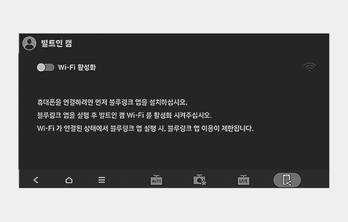

스마트폰 연결하기
마이현대 앱을 설치한 후 스마트폰에서 빌트인 캠을 설정하거나 녹화 영상을 재생하고 다운로드 및 공유할 수 있습니다.
스마트폰 모델에 따라 Google Play나 App Store에서 '마이현대' 앱을 검색한 후 설치할 수 있습니다.
스마트폰 연결하기

2C_BuiltInCamSmartPhoneConnection
-
인포테인먼트 시스템에서 빌트인 캠 설정 > 앱 연결 > 빌트인 캠 Wi-Fi 활성화를 선택(활성화)한 후 비밀번호를 설정하십시오.
-
자세한 설명은 '앱 연결 설정하기'를 참고하십시오.
-
-
스마트폰에서 마이현대 앱을 실행한 후 빌트인 캠 메뉴를 선택하십시오.
-
마이현대 앱에서 빌트인 캠 연결하기를 누른 후 Wi-Fi 연결을 선택하십시오.
-
스마트폰의 Wi-Fi 설정 화면에서 빌트인 캠 Wi-Fi 네트워크 이름을 선택한 후 비밀번호를 입력하고 연결을 완료하십시오.
-
빌트인 캠 Wi-Fi에 최초 연결할 때 비밀번호를 설정해야 합니다(숫자, 문자, 특수문자 포함, 10자 이상).
-
빌트인 캠의 Wi-Fi 네트워크 이름은 인포테인먼트 시스템의 안내 화면에 표시됩니다.
-
스마트폰을 빌트인 캠 Wi-Fi에 연결하면 모바일 네트워크 사용이 중단됩니다. 모바일 네트워크를 사용하려면 빌트인 캠 Wi-Fi 연결을 해제하십시오.